goodalexander
goodalexanderIs Trump Going To Re-Escalate Iran?
Short answer: no sign of de-escalation. The IRGC is playing hardball, and Vance isn't secretly running the show.
I wrote previously that I had gone long Oil and shorted Apple, SpaceX and Tesla in anticipation of escalation. I wanted to share my process.
The Brent drop
Oil dropped 13%. The worst week since 2022. Democrats swept the midterms with backlash on the war that JD Vance tweeted about. Gulf exports through Hormuz are running around pre-war levels and OPEC output is 88% of what it was in Feb. Saudis exporting 7m bbl/day in October while China's economy is very weak (below pre-war). Things tanked on a rumored Qatari peace deal this weekend.
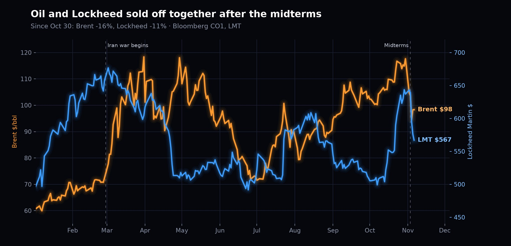
Previously I was not long Oil (last article was a silver vs stocks trade) but after this drop I think there is good risk reward betting things get worse in the Middle East.

Tehran has put out a list of 7 conditions which are not realistically going to be met. Democrats take both chambers Jan 3 - and will begin exerting pressure on Trump via budgetary measures to take “the Qatari offramp” which involves lifting the US blockade on Iran, letting nuclear inspectors into Iran, and kicking off deeper talks.
Democrat measures would include starving the war via a stopgap budget that expires December 11. Susan Collins (R) has already warned of ‘near term solvency challenges’ for US forces. Dems could write defense bills that provide no money for offensive operations against Iran, tighten War Powers rules and investigate financial benefits (ranging from Trump's trades, to Kushner's connections). Trump has said “the war ends when I say it ends”.
Because the concerns about Democrats are credible, and I don't think Trump wants his legacy to be that of a loser - I think he will accelerate bombing of Iran once Jared Kushner wraps up the Ukraine war negotiations in Abu Dhabi (Nov 10-11). When the 60 Minutes interview airs tomorrow night, Trump backs Hegseth - removing the probability he's fired and refocusing the market on escalation. Realistically the strikes come after Kushner physically leaves Abu Dhabi - likely near the end of this week. The new moon is November 9, so nights stay dark until about November 14.
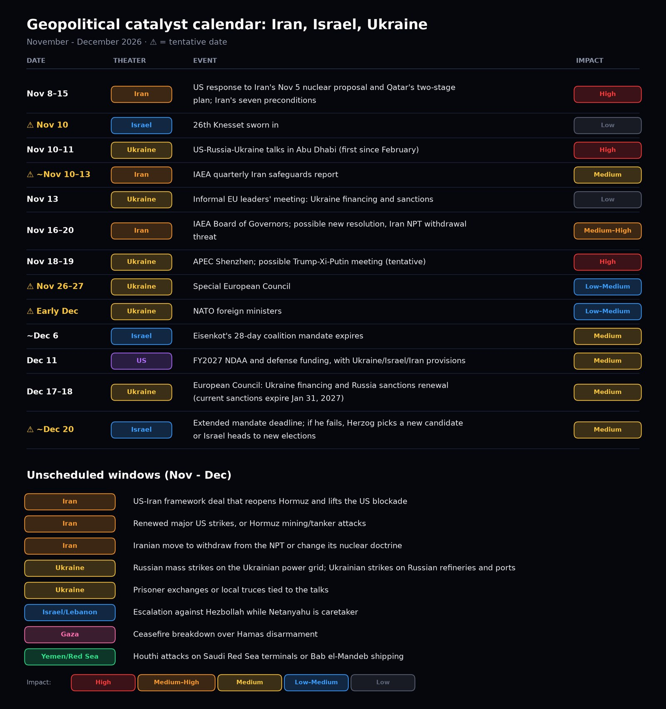
Question 1: Has Trump said he is going to de-escalate Iran?
Short answer: no. I think people got overly excited about Vance's anti-war statements.
The most relevant thing (discussed a bit later) is the Qatari-led negotiations. During the negotiation - the US hit Qeshm Island, and the TLDR is that the Iranians are playing hardball. Yesterday, an airstrike hit a market in Yemen - killing 30 people.
The FT is repeatedly putting out headlines saying Trump is ending the war and that Vance is secretly in control of the agenda (NYT also). But if you read the content of these articles, the NYT points to an 'anonymous source' that says Stephen Miller was put in place to refocus on the domestic agenda and 'wind down' the war in Iran.
However, if you look at on-the-record quotes from Stephen Miller (a far right Jew) - he's been consistently hawkish.
In March with Hannity, he argued "America First" isn't isolationism. He said it means the US will be the unmatched world power and will avenge American blood. He also cited 47 years of Iranian attacks on Americans. Later he warned Iranians that attacking shipping would bring a "hellish price". PBS Frontline counted him as in his "war cabinet" alongside Hegseth. Miller, who is Jewish, worked on internal panels to revoke student visas on the basis of antisemitic remarks. Haaretz calls him a "staunch supporter of Israel".
When asked about Vance's statements, Trump (with quite a dour tone) said "they're fine" then followed up "maybe he won't run again". He furthermore said operations were "continuing" in the same appearance.
Trump is largely declaring victory:
“If we didn’t go in with those beautiful B2 bombers a little more than a year ago... there would be no Israel... and there would be no Middle East.”
“We’re doing more oil right now going through the straits than we did before the war started.”
“It’s not a war. Can’t be a war when for five months nobody was hurt, killed or anything else.”
After the peace discussions, asked about recent strikes:
“We do minor strikes... we knocked it out in about 15 minutes, maybe five.”
On mediated nuclear proposals:
“They’re not doing anything without our approval.”
On escalation:
“Do we want to go further and just certify it?... I would rather not destroy the rest of the country if possible, but maybe I’ll have to. You’ll know soon enough. We’re locked and loaded. If we have to do the rest of the Iran thing, we’re very much locked in.”
Hegseth firing odds spiked to 68% after the midterms. Since then, Trump previewed a 60 Minutes appearance, and when pressed on Hegseth he strongly implied he was not getting replaced.
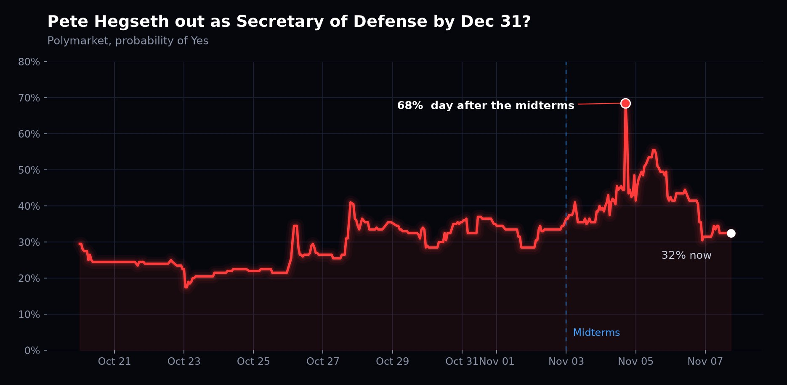
On Saturday afternoon Trump posted a nearly five-minute Hegseth video to Truth Social with no comment. Hegseth calls the war “a courageous and historic effort that will ensure Iran never gets a nuclear weapon”, asks the lame-duck Congress for a defense reconciliation bill of “at least $350 billion” and calls the impeachment articles against him a “sham”.
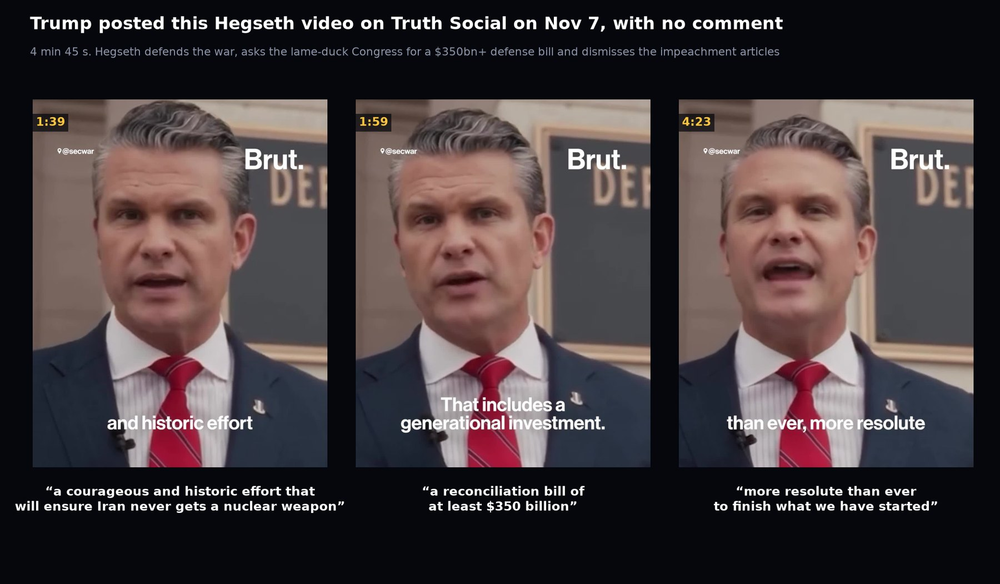
A few hours later Hegseth posted the ending on X, cut over footage of him walking with Trump and Vance: “President Trump leads the way. And I'll assure you, we have only just begun to fight. We are more determined than ever, more resolute than ever to finish what we have started… Godspeed, and keep going.”
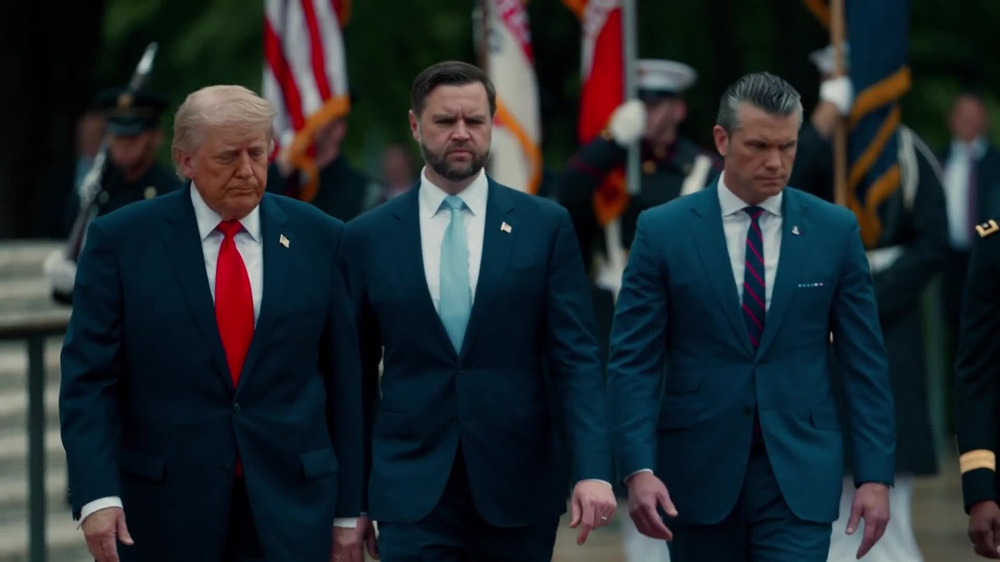
Vance has been speaking every day to the Qatari Prime Minister Sheikh Al Thani, Pakistani Army Chief Munir and other mediators. Apparently Jared Kushner is also there. Vance had previously tried to broker a deal with Mohsen Rezaei of the Supreme National Security Council.
Question 2: Who is in charge in Iran? What is the IRGC asking for? And is resolution likely based on the existing terms?

The vast majority of Iranian negotiators are hardliners.
- Mojtaba Khamenei: The decider. Picked in March under IRGC pressure. He's never held elected office. He told the IRGC chief to prepare “powerful offensive operations”
- Rezaei: controlled the IRGC from 1981-1997. Wanted man in Argentina for the 1994 bombing of a Jewish community center. Vance has been writing letters to him. Repeatedly states he wants Hormuz closed until ‘all 7 conditions are met’
- Kani: deputy to hardline nuclear negotiator Jalili - later panned the 2015 nuclear deal. This week on record saying “no compromises” and “no paper commitments”
- Ghalibaf: former IRGC commander, national police chief. In 1999 he wrote a notorious hard line letter saying to put down student protests.
- Vahidi: first commander of the Quds Force, former IRGC head of intelligence. Both of his predecessors are dead. He's more extreme.
- Abdollahi: he set out 5 conditions on November 3 and warned of retaliation without “geographic limits”
- Pezeshkian can sign a deal but not deliver it. He doesn't control the military. His demands match the hardliners' list.
- Araghchi: Cannot close the deal. Is the messenger.
The IRGC is asking for the following concessions before engaging in nuclear talks:
- Ending the US blockade on Iran's ports
- Lifting sanctions
- Unfreezing its assets
- Issuing compensation for war damage
- Ending hostilities in the region, including Israel's operations in Lebanon

Washington has refused most of this. Trump laughed off reparations, suggesting Iran to pay the US instead. No unfrozen money until Iranian compliance. Blockade stays “if things are not resolved”. Israel has consistently refused to leave Lebanon.
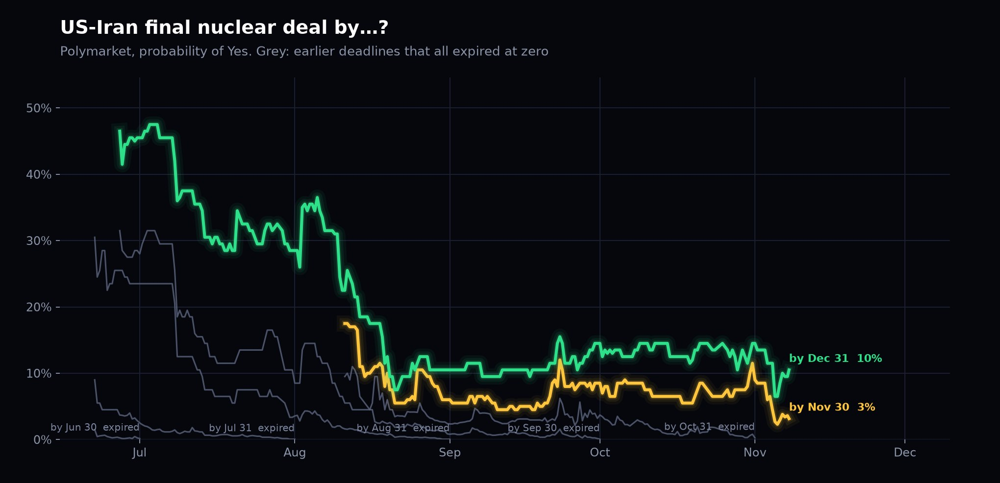
On Hormuz the IRGC has been very explicit. It stays shut until every condition is met:
- IRGC, Nov 8: “Since the early hours of this morning, three non-compliant tankers have exploded and caught fire while they were sailing in the illegal channel in the Strait of Hormuz.” The Guards did not name the tankers. The UK's UKMTO separately reported a tanker on fire off Khasab, Oman, with the crew evacuated, and another tanker hit by an unknown projectile while transiting outbound on Nov 7.
- IRGC Navy, Nov 6: “The Strait of Hormuz has been closed by the Islamic Revolutionary Guard Corps Navy. Nothing will change until Iran's seven conditions are met.”
- Rezaei, Nov 5, after meeting Putin: “We have announced seven conditions to the Americans. As long as they do not execute our seven conditions, we will neither open the Strait of Hormuz nor have negotiations.”
- Rezaei, Nov 3: “They must completely and explicitly answer and act upon Iran's seven conditions... Only in this case will the Strait of Hormuz be reopened.”
- Foreign Ministry spokesman Baghaei, Nov 2: “No final agreement will be formed, and the Strait of Hormuz will not be reopened or secured, unless the U.S. naval blockade is ended and Iran's legitimate demands are fully implemented.”
- IRGC spokesman Mohebbi, late Oct: “[The strait] will never be opened until the Islamic Republic's conditions are fully met.”
- Ghalibaf, Oct 4: “[The strait] will not be opened until our seven conditions, based on the Islamabad Memorandum of Understanding, are met.”
- Mohebbi, Aug 26: “If the US does not accept our conditions, the Strait of Hormuz will under no circumstances be reopened.”
- Mohebbi, Aug 9: “Our current strategy is to maintain this strait until the enemy accepts all our conditions... the strait is now actually a theatre of war for us and not just a waterway.”
In August Mohebbi said they could reopen. Baghaei said it could reopen within two days if demands are met.

Follow the money
It's been reported that Jared Kushner is now involved in negotiations. Kushner's Affinity Partners is a $6+ billion fund with 99% of its money from foreign investors. Saudi is the anchor at $2 billion. Trump previously said “Steve and Jared” convinced him Iran was about to attack - something Trump's departing counterterrorism chief Joe Kent disputed in his resignation letter: “Iran posed no imminent threat to our nation.” Affinity is the largest shareholder in Phoenix Financial, which has $456 million invested in Israeli defense companies. Saudi pushed for the war and the UAE has urged “more decisive action” on Iran. Both are major backers of Affinity.
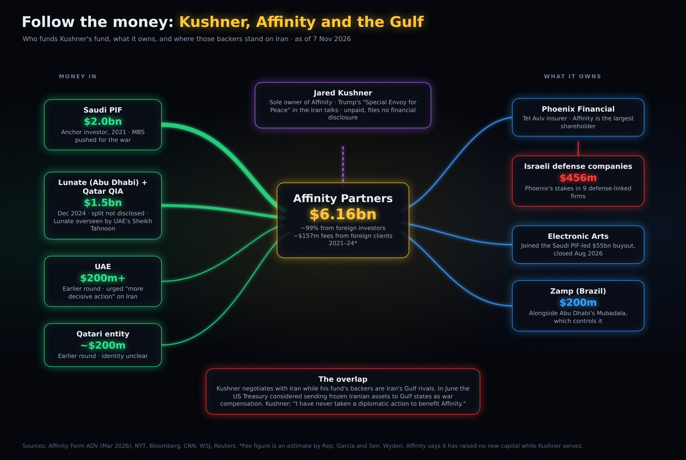
- Kushner is an unpaid “Special Envoy for Peace”, so he files no financial disclosure.
- In December 2024 Abu Dhabi's Lunate (overseen by UAE national security adviser Sheikh Tahnoon) and Qatar's QIA put in another $1.5 billion and extended the fund to 2029.
- That same month Kushner said “we pre-emptively tried to avoid any conflicts, so we don't have to raise capital for the next four years”. In March the NYT reported he was seeking $5 billion or more of new Gulf money while serving as envoy. Affinity says it has raised nothing new while he serves.
- In June the US Treasury considered sending frozen Iranian assets to Gulf states as war compensation - the same states that back Affinity.
- Democrats Garcia and Wyden estimate Affinity collected about $157 million in fees from foreign clients in 2021-24, $87 million of it from Saudi.
- CREW sued on October 14 to bar him from the role unless he is Senate confirmed. Democrats, who just won both chambers, say they will call him to testify.
- Kushner's line: “I have never taken a diplomatic action to benefit Affinity.” On Phoenix: “I have no role in deciding what Phoenix buys or sells.”
Kushner and Trump's financial interests are clearly tied up in the Middle East, with nations who directly benefit from the US fighting on their behalf.
The Saudi-Houthi front and Aramco
The Saudi-Houthi war has become the main active front of the wider Iran war, and it escalated sharply this week.
- Nov 7: Airstrikes hit homes in al-Shariya, a village about 10 miles from Sanaa, killing at least 27 and wounding 36, mostly women and children, according to the Houthi-run Health Ministry, which blamed Saudi Arabia. The Houthis say they attacked Saudi Arabia in response. Saudi did not comment.
- Nov 6: 30 killed in a strike on a market in southern Yemen. The Houthis and Yemen's Saudi-backed military each blame the other. Saudi intercepted two Houthi ballistic missiles aimed at Najran and a drone over the Mecca region.
- Nov 5: Two coalition strikes on Sanaa killed seven, per the Houthi Health Ministry. Saudi intercepted a missile aimed at the Medina region and issued danger alerts for Yanbu.
- On the ground: Yemeni government forces are advancing on the Houthis in Taiz, and the Houthis have launched small raids on Saudi border posts.
The truce fell apart over the summer. The UN says more than 1,600 people have been killed and more than 300,000 displaced since fighting resumed.
The bigger market issue is Aramco. With Hormuz shut, the 1,200 km East-West pipeline from the eastern oil fields to Yanbu on the Red Sea has become Saudi's main export route - Yanbu went from about 1 million barrels a day to 4-4.9 million. It keeps getting hit:
- April: an Iranian drone hit a pumping station and cut about 700,000 barrels a day. Restored within three days.
- Sept 10-11: drones launched from Iraq hit pumping stations and Saudi shut the whole line. Flows were halted from Sept 11 to 22.
- Oct 4: a pumping station at Khurais was hit. AFP's source said “big damage” and the line stopped again. Reuters' source said oil was still flowing.
- Oct 24-27: the Houthis claimed strikes on pumping stations, Aramco's Yanbu facility and the Rabigh refinery. Saudi has not confirmed them.
- Nov 5: danger alerts for Yanbu as Houthi attacks continue.
Current status is unknown. Riyadh stopped confirming damage after September, and each repair has reportedly taken longer. Saudi has no uncontested export route: Gulf terminals face mines at Hormuz, Yanbu cargoes face the Houthis at Bab al-Mandeb, and the pipeline linking the two keeps getting hit.
The US Consumer is Strong
Any optical concerns that might stop Trump from attacking due to the economy are likely misplaced. The US Consumer is mostly showing signs of shrugging off high fuel prices - evidenced by commentary from recent earnings releases and guidance across the travel sector.
Gasoline is $4.15 a gallon vs $3.02 a year ago with jet fuel up even more, but demand remains strong. Delta, Southwest, American and United all guided Q4 with robust consumers - “we don't see any sign at this point that fares coming up are eroding customer demand in any way,” Robert Jordan of Southwest said after jacking prices up 27%. Similar comments are broad based.
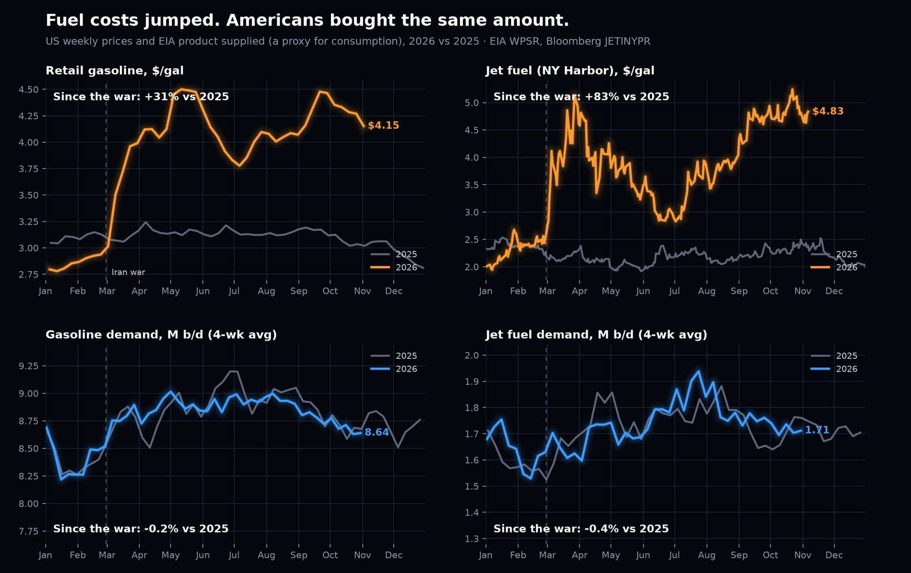

Jobs and growth are holding up. October payrolls +165k, unemployment 4.1% (down from 4.5% last November), Q3 GDP +3.4% annualized and September retail sales +0.8%.

Since the war started, Q4 revenue consensus is up 11% for the airlines, flat for hotels and travel, and down 2% for cruise. Airlines are now expected to grow Q4 revenue 13-26% vs last year, up from 7-11% before the war.

Airbnb is growing bookings 21% - a huge acceleration vs before the war. Marriott has raised full year guidance twice, and is seeing revenue per room +7.4% higher vs a year ago in the US and Canada. Royal Caribbean is signaling that bookings are up 15% or so with 2027 at similar rates. Carnival (the lowest end) isn't growing as fast but still saw customer deposits +7% and raised guidance.
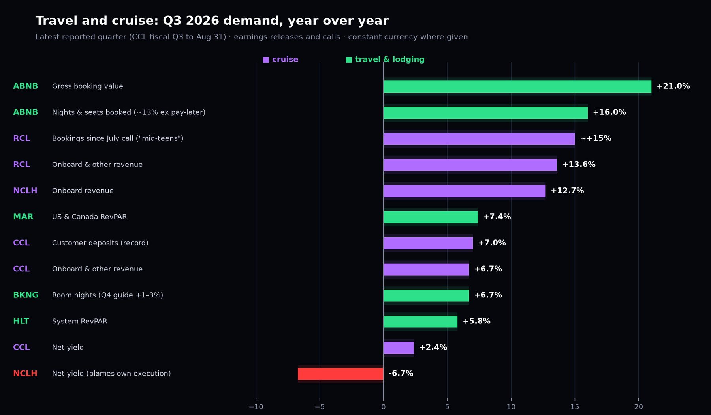

Where higher fuel shows up is margins and long-haul trips. Delta, American and Southwest cut full-year EPS guidance and United guided Q4 earnings below expectations - Delta's CFO on the cut: “All of it is fuel.” United said its leisure load factor fell 1.3 points, a small amount of elasticity. Southwest flew 3.2% fewer passengers. Booking says elevated airfares are weighing on long-haul travel, while “domestic travel continues to hold up as we are seeing travelers take shorter trips and choose destinations closer to home.”
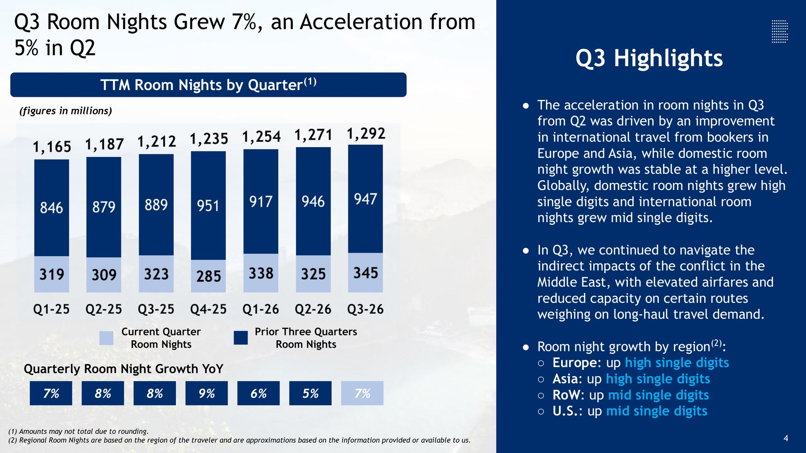
Supply isn't coming either. Exxon and Chevron are producing less than a year ago (-5.7% and -2.6%) and spending less to drill in the US. Exxon's US upstream capex is down 12% this year and full-year spend is tracking its plan; it isn't holding a December plan event and will just reaffirm 2027 targets by press release. Chevron cut US upstream capex 30% in Q3 on lower Permian spend, will finish 2026 at the low end of its capex guidance and sets the 2027 budget in December. The Permian has gone “from growth to managing at the plateau” - Mike Wirth, Chevron CEO.

And the government's buffer is mostly spent. The Strategic Petroleum Reserve has been drawn down from 415 million barrels before the war to 282 million - its lowest level since 1982.
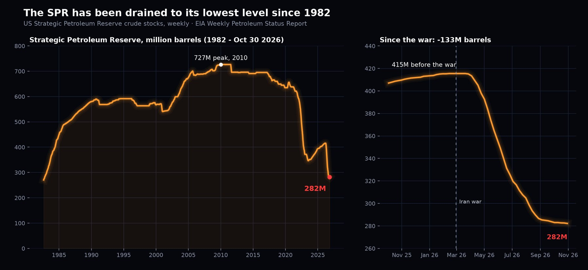
It genuinely doesn't seem like there is something that is going to cause fuel price sensitivity to send oil lower.
Based on Trump's recent Tweets blaming the market crashes, there is not an obvious reason Trump would hold back in Iran for the economy - which, by most measures, is performing strongly in spite of high oil prices.
With regards to war escalation, what is the implication of Eisenkot gaining over Netanyahu?
Short answer: very little for the next few weeks, and less than people think after that.
- Netanyahu is still prime minister. On November 7 President Herzog picked Gadi Eisenkot to try to form a government, with the formal mandate handed over Sunday. Eisenkot gets 28 days, extendable by 14. Netanyahu stays on as caretaker with his full powers until a new government wins a Knesset vote - so through this month's strike window, Netanyahu is the one coordinating with Trump. He has reportedly been pressing Trump to strike after the midterms.
- Eisenkot may not get there. Netanyahu's bloc won 53 seats, Eisenkot's Jewish opposition bloc 48 and the Arab parties 19. Sixty-seven MKs recommended Eisenkot, but that is not a coalition. To reach 61 he needs outside support from the Arab parties (Liberman is resisting), the ultra-Orthodox parties (who clash with his universal conscription plan) or Likud. If he fails, someone else gets a turn and then there is another election - with Netanyahu as caretaker the whole time.
- Eisenkot is not a dove on Iran. He is a former IDF chief of staff who lost a son and two nephews in Gaza. He calls an Iranian nuclear breakout Israel's most serious strategic threat, wants Hamas's military and governing capability destroyed and opposes a Palestinian state under present conditions. The difference is method: more coordination with Washington and Europe, less political improvisation.
- The US backdrop is shifting either way. Trump said on November 3 that the US will stop the $4 billion a year in military aid in 2027 - although the current agreement runs to 2028 and Congress controls the money. Eisenkot has pledged to rebuild bipartisan support in Washington, which matters more now that Democrats run Congress.
On November 8 Defense Minister Israel Katz said Iran is attempting to renew efforts to acquire nuclear weapons and that the mission against Iran isn't completed yet: “We cannot tolerate these threats. The State of Israel is determined today, more than ever, to stand firm regarding its own destiny, to take preemptive action, and to pursue a proactive, offensive policy against our enemies.”
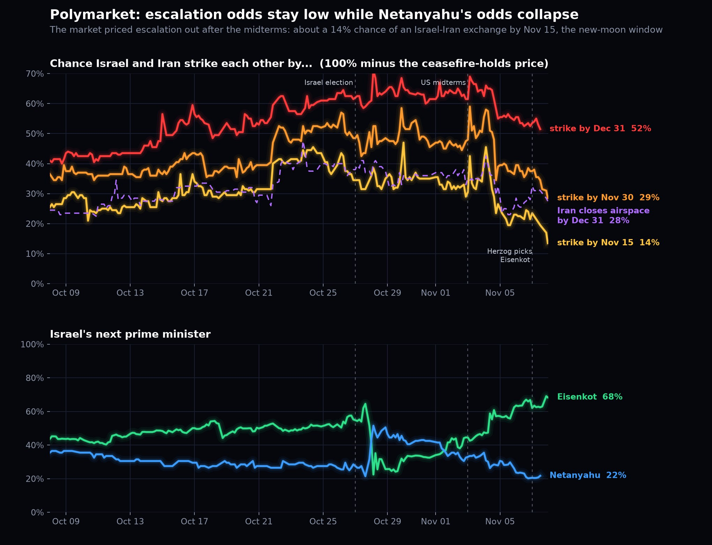
Markets are pricing the uncertainty, not a policy change: the shekel is about 4.5% weaker against the dollar than on election day and the TA-35 has swung by 3% a day.
Ukraine timeline
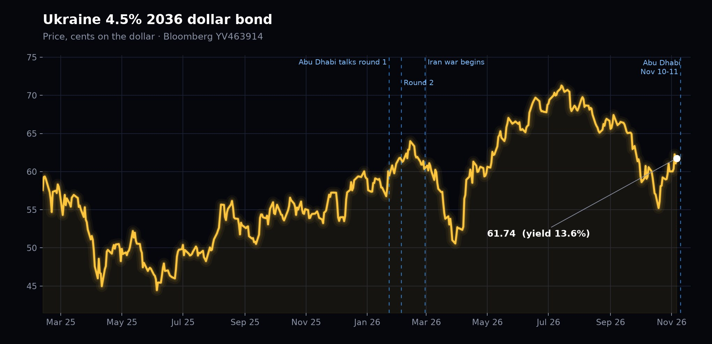
US-mediated talks between Ukraine and Russia are scheduled in Abu Dhabi next week, November 10-11. Witkoff and Kushner lead for the US. Putin aide Vladimir Medinsky leads for Russia.
- Jan 23-24 and Feb 4-5: the first two rounds of US-brokered trilateral talks, both in Abu Dhabi.
- Feb 28: the US and Israel launch the war on Iran. The Ukraine talks stall.
- October: Putin meets Witkoff in St Petersburg and agrees to a new round.
- Nov 2: Witkoff announces the Abu Dhabi talks will “focus on post-war security arrangements, de-escalation, humanitarian efforts and next steps toward peace.”
- Nov 3: the Kremlin confirms. Overnight Russia strikes across Ukraine, killing dozens, and Moscow says it downed nearly 500 drones heading for the capital region.
- Oct 30-Nov 6: Ukraine hits six Russian refineries in a week, after a two-week pause in October that coincided with Trump's calls for calm before the midterms. Yanos, a 300,000 barrel a day plant that supplies Moscow, halted after a Nov 3 strike.
- October: Russian fuel exports hit a four-month high of 1.32 million barrels a day after Trump and Putin agreed to relax Russia's diesel export ban. Trump says he will “take a look” at the law that bars unloading Russian fuel in the US.
- This week: US negotiators meet France, Germany, Britain, the EU and NATO in Brussels on Ukraine's security guarantees and reconstruction. Zelensky says he hopes Abu Dhabi leads to a face-to-face meeting with Putin.
The two sides are still far apart on terms, and Trump has been pressing Ukraine to make a deal.
Question 3: Is Vance going to be cast as the architect of Iran peace in preparation for a 2028 campaign?
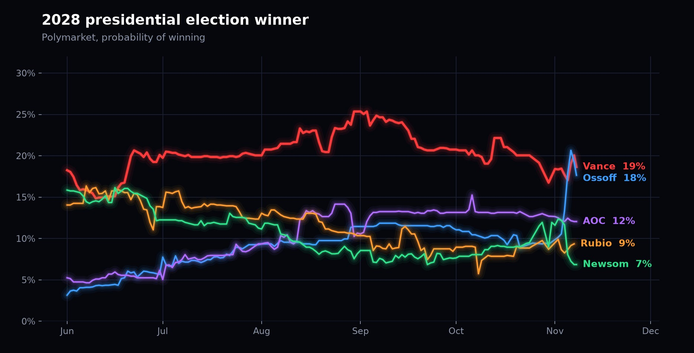
Regarding Vance, Thiel (his bankroll) said in a recent interview that "it will be very hard for either Vance or Rubio to win" - reasoning that if Republicans get wiped out in the midterms, voters will back a socialist candidate and America is heading in that direction. Notably he did not say that Vance is the only hope, or really even express excitement about him on a forward basis.
If Vance were secretly in control of Trump's agenda, I do not think Thiel would be blackpilling.
Fuentes, far right memelord, points out that JD Vance was on the record repeatedly in favor of the war, so "looking at the data" after the fact doesn't cut it as a response. Fuentes and the Groypers were the animus behind the massive young male shift towards Democrats.
Young men under 30 voted 66% Democrat, whereas 56% of young men voted for Trump in 2024. Fuentes's fundamental argument is "vote Blue down the line" to punish Trump for betrayal, so that chaos, panic, mass migration and business destruction can ensue - allowing the rise of a far right leader to "be the voice of reason".
Trade Structuring
The other side of long oil is short Apple, Tesla and SpaceX. The three companies added together have $8.2 trillion of market cap on $806bn of forward revenue, $187bn of net income and just $14bn of free cash flow. That is a 2.3% forward earnings yield and a 0.2% free cash flow yield. The S&P 500 earns 5.6% (3.7% in free cash flow), MSCI World 5.9% (3.9%) and the developed world outside the US 6.8% (5.4%).
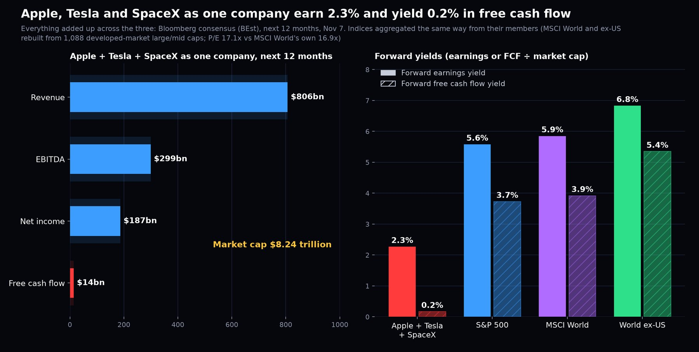
Oil is also the least correlated asset to US stocks. Over five years Brent's weekly correlation with the S&P 500 is 0.05, vs 0.16 for gold and 0.13 for Treasuries. Since the war it has turned negative (-0.35), while gold (0.47) and Treasuries (0.27) have moved with stocks.

Elon Musk and Apple are part of the American exceptionalism trade that has led to massive inflows into the US relative to the rest of the world. Since 2020, $1.14 trillion has gone into the four biggest US index ETFs (VOO, VTI, IVV and SPY) vs $331bn into the six biggest international ones.
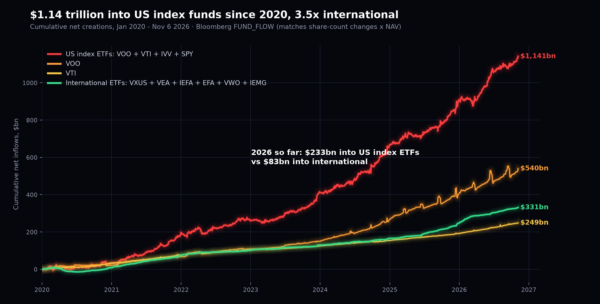
People are full-porting US passive in a way the academic literature doesn't support. The case for passive investing comes from CAPM, where every investor holds the market portfolio - all assets, globally - not one country's index. If you had full-ported the largest equity market of its day in the past, you would have faced total loss of capital or decades underwater:
- Russia was 5.9% of world market value in 1899, a top-five market. Investors “lost everything” in 1917 (Dimson, Marsh & Staunton).
- Japan was 40% of the world index at the start of 1989, vs 29% for the US. The Nikkei didn't regain its December 1989 peak until February 2024 - 34 years later. Japan is about 5% of world indices today.
- Across 39 developed markets since 1841, the chance of losing to inflation over 30 years is 12.6% for home-country stocks vs 4.2% for international (Anarkulova, Cederburg & O'Doherty). Their optimal lifetime mix is 33% domestic and 67% international; 100% domestic stocks carries a 17.1% chance of running out of money in retirement vs 7.0%.
- Vanguard, which runs VOO and VTI, recommends 40% international to its own advised clients. Its research found volatility was lowest with 40-50% international.
The US has been the exception - over the last 50 years it was the one big market where staying home paid off (UBS Global Investment Returns Yearbook 2025). That is exactly what everyone is extrapolating. The US is now 73% of MSCI World and around 62% of world market value, with concentration at its highest in at least 100 years.
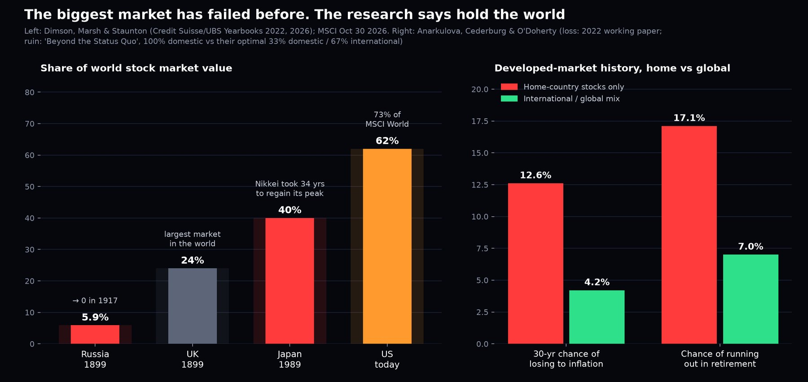
Hundreds of billions are being full-ported into US passive, and American tech (Apple) and Elon Musk are among the biggest beneficiaries. The optics of a failed or botched military endeavor have the potential to reverse this.
Sources
- Brent crude front-month: Bloomberg CO1 Comdty; Lockheed Martin: LMT US Equity; EURCHF Curncy
- AFP, Nov 8: Iran says 3 tankers caught fire in Hormuz
- Bloomberg News, Nov 8: UK Navy Says Tanker Struck by Projectile While Transiting Hormuz
- Bloomberg News, Nov 8: Katz: Iran Attempting to Renew Efforts to Acquire Nuclear Arms
- Bloomberg News, Nov 6: Oil Plunges But Markets Aren't Out of Jeopardy Yet: Energy Daily
- Bloomberg News, Nov 6: Oil Swings as Traders Parse Iran War De-Escalation Prospects
- WSJ editorial board: Democrats May Defund the Troops
https://www.wsj.com/opinion/democrats-may-defund-the-troops-f1ba6094 - Congressional Research Service R48887: U.S. Conflict with Iran
https://www.congress.gov/crs-product/R48887 - Polymarket: Pete Hegseth out as Secretary of Defense by December 31?
https://polymarket.com/event/pete-hegseth-out-as-secretary-of-defense-by-december-31 - Polymarket: Presidential Election Winner 2028
https://polymarket.com/event/presidential-election-winner-2028 - Hegseth on X
https://x.com/PeteHegseth/status/2118794500994957459/photo/1 - Fuentes on JD Vance
https://x.com/FuentesUpdates/status/2118231048308044216 - Iran International: Mojtaba Khamenei named Supreme Leader
https://www.iranintl.com/en/202603030390 - Al Jazeera: Iran's new military appointments (Vahidi)
https://www.aljazeera.com/news/2026/8/11/whats-behind-irans-new-military-appointments-and-what-do-they-indicate - Wikipedia: Ali Bagheri
https://en.wikipedia.org/wiki/Ali_Bagheri - IranWire: We won't rely on US paper commitments this time
https://iranwire.com/en/news/159896-senior-iranian-official-we-wont-rely-on-us-paper-commitments-this-time/ - UANI: Mohammad Bagher Ghalibaf
https://www.unitedagainstnucleariran.com/mohammad-bagher-ghalibaf-speaker-of-irans-parliament - Radio Farda: Soleimani involved in protest crackdowns (1999 letter)
https://en.radiofarda.com/a/soleimani-was-involved-in-protest-crackdowns-former-guard-commander-says/30426580.html - Al Jazeera: Iran commander sets out five conditions (Nov 3)
https://www.aljazeera.com/news/2026/11/3/iran-commander-sets-out-five-conditions-for-regional-security - Al Jazeera: Iran says US reply unconvincing; Trump confirms strikes (Nov 4)
https://www.aljazeera.com/news/2026/11/4/iran-says-us-reply-to-hormuz-plan-unconvincing-trump-confirms-strikes - Axios: Vance leads push for new Iran deal
https://www.axios.com/2026/11/06/vance-leads-push-new-iran-deal - NPR: Trump dismissing Iran's demands for war damages
https://www.npr.org/2026/08/11/g-s1-138200/trump-iran-war-damages - CBS: Vance denies Iran will receive billions in assets
https://www.cbsnews.com/news/vance-iran-deal-billions-of-dollars-in-assets-cbs-mornings-interview/ - IBTimes: sanctions relief tied to nuclear progress
https://www.ibtimes.co.uk/trump-links-iran-sanctions-relief-nuclear-progress-1822491 - Times of Israel: Israel won't be bound by Iran deal, stays in south Lebanon
https://www.timesofisrael.com/israel-vows-to-stay-in-south-lebanon-if-iran-strikes-well-hit-it-with-full-force/ - Al Jazeera: Netanyahu says ceasefire does not include Lebanon
https://www.aljazeera.com/news/2026/4/8/netanyahu-says-us-iran-ceasefire-does-not-include-lebanon - PBS: US and Iran call off talks over fighting in Lebanon
https://www.pbs.org/newshour/world/israel-and-hezbollah-renew-ceasefire-after-u-s-and-iran-call-off-talks-over-fighting-in-lebanon - Tasnim: Two tankers hit mines in Strait of Hormuz, IRGC (Nov 6)
https://www.tasnimnews.ir/en/news/2026/11/06/3741632/two-tankers-hit-mines-in-strait-of-hormuz-irgc - News.az: Iran tells Putin Hormuz closed until US meets seven conditions
https://news.az/news/iran-t-ells-putin-strait-of-hormuz-will-remain-closed-until-us-meets-seven-conditions - Press TV: Hormuz won't reopen until conditions met (Nov 3)
https://www.presstv.co.uk/Detail/2026/11/03/779867/unconvincing-snsc-chief-rejects-us-response-to-demands-says-hormuz-wont-reopen-until-conditions-met - Famagusta Gazette: Hormuz can reopen in 2 days if US meets demands
https://famagusta-gazette.com/hormuz-strait-can-be-reopened-in-2-days-if-u-s-meets-its-demands-iran-says/ - News.az: IRGC reiterates conditions for opening Hormuz
https://news.az/news/iran-s-irgc-reiterates-conditions-for-opening-strait-of-hormuz - Al Jazeera: Hormuz to remain closed until US meets conditions (Oct 4)
https://www.aljazeera.com/news/2026/10/4/iran-says-strait-of-hormuz-to-remain-closed-until-us-meets-conditions - Press TV: Hormuz won't reopen unless US accepts conditions, IRGC (Aug 26)
https://www.presstv.co.uk/Detail/2026/08/26/775116/Strait-of-Hormuz-won%E2%80%99t-reopen-unless-US-accepts-Iran-conditions-IRGC-spokesperson - Polymarket: US-Iran Final Nuclear Deal by...?
https://polymarket.com/event/us-iran-final-nuclear-deal-by-20260621201254412 - Al-Monitor / Reuters: US to mediate trilateral talks in Abu Dhabi next week
https://www.al-monitor.com/originals/2026/11/us-mediate-trilateral-talks-ukraine-russia-abu-dhabi-next-week-us-envoy-says - RTE: Russia confirms Ukraine-US talks in Abu Dhabi next week
https://www.rte.ie/news/2026/1103/1597730-ukraine/ - The Moscow Times: US-mediated Ukraine peace talks to resume in Abu Dhabi
https://www.themoscowtimes.com/2026/11/03/us-mediated-ukraine-peace-talks-to-resume-in-abu-dhabi-next-week-a94160 - Latin Times: talks resume in Abu Dhabi after a nine-month pause
https://www.latintimes.com/us-mediate-russia-ukraine-talks-abu-dhabi-600870 - Ukraine 4.5% 2036 bond price: Bloomberg YV463914 Corp
- Bloomberg News, Nov 6: Kyiv Hits Sixth Russian Oil Plant in Week as Strikes Pick Up
- Bloomberg First Word, Nov 6: Russia's Major Yanos Oil Refinery Halted Operations After Strike
- Bloomberg News, Nov 6: Russia Fuel Flows Hit Four-Month High as Diesel Curbs Eased
- Bloomberg News, Nov 6: OPEC Output Neared Pre-War Levels on Saudi Rebound, Survey Shows
- Bloomberg News, Nov 6: India's HPCL Says Booking Tankers for Hormuz Still Complicated
- Al Jazeera: Israel's president picks Eisenkot over Netanyahu
https://www.aljazeera.com/news/2026/11/7/israels-president-picks-eisenkot-over-netanyahu-to-form-next-government - NPR: Israel's president taps opposition candidate to form a government
https://www.npr.org/2026/11/07/g-s1-152536/netanyahu-israel-government-eisenkot-herzog - CNN: Eisenkot to be tasked with forming next Israeli government
https://www.cnn.com/2026/11/07/middleeast/eisenkot-israel-government-latam-intl - Washington Post: Eisenkot tapped to form government
https://www.washingtonpost.com/world/2026/11/07/israeli-president-taps-ex-general-eisenkot-opponent-netanyahu-form-government/ - Times of Israel: Trump says US to end $4 billion in annual military aid
https://www.timesofisrael.com/trump-says-us-to-end-4-billion-in-annual-military-aid-to-israel-by-end-of-2026/ - The National: Trump says US will end $4bn in annual military aid to Israel
https://www.thenationalnews.com/news/us/2026/11/03/trump-says-us-will-end-4bn-in-annual-military-aid-to-israel/ - Polymarket: Israel x Iran ceasefire continues through...?
https://polymarket.com/event/israel-x-iran-ceasefire-continues-throughptptpt-20260716224448963 - Polymarket: Prime Minister of Israel after the next election?
https://polymarket.com/event/who-will-be-the-next-prime-minister-of-israel-after-the-next-election - Polymarket: Iran full airspace closure by...?
https://polymarket.com/event/iran-full-airspace-closure-byptptpt-20260625195253028 - Strait of Hormuz Ship Monitor (ship positions, daily crossings, oil exports; CC BY 4.0)
https://hormuz.data-tracking.net/ - UKMTO maritime security incident reports (Open Government Licence v3.0)
https://www.ukmto.org/ - Middle East Eye: IRGC won't reopen Hormuz until US accepts all conditions
https://www.middleeasteye.net/live-blog/live-blog-update/irgc-says-wont-reopen-hormuz-until-us-accepts-all-irans-conditions - CNN: Top Democrat investigating Kushner's investments (Phoenix, $456m)
https://edition.cnn.com/2026/10/06/politics/jared-kushner-israeli-investments-invs - The Hill: Kushner pushes back on CNN report
https://thehill.com/homenews/administration/6127113-kushner-denies-cnn-israel-investment-report/ - Forbes: Kushner rejects CNN report
https://www.forbes.com/sites/saradorn/2026/10/02/kushner-rejects-cnn-report-that-his-israeli-diplomacy-might-benefit-his-private-equity-fund/ - Fox News: White House responds after top counterterrorism official (Joe Kent) quits
https://www.foxnews.com/politics/white-house-after-top-counterterrorism-official-quits-says-trump-had-strong-evidence-iran-would-attack-us.amp - PBS: outgoing counterterrorism official says Iran posed no imminent threat
https://www.pbs.org/newshour/politics/watch-johnson-refutes-outgoing-counterterrorism-officials-claim-that-iran-posed-no-imminent-threat - Raw Story / The New Yorker: 'Total malpractice', unprepared negotiators
https://www.rawstory.com/jared-kushner-2677860719/ - AP via WHEC: Airstrikes kill more than 2 dozen near Yemen's capital
https://www.whec.com/ap-top-news/airstrikes-kill-more-than-2-dozen-people-near-yemens-capital-houthis-say/ - The New Arab: Houthis say 27 killed in Saudi strikes on Sanaa province
https://www.newarab.com/news/houthis-say-27-killed-saudi-strikes-yemens-sanaa-province - Emirates 24|7: Saudi warns of danger in Yanbu as Houthi attacks continue
https://www.emirates247.com/world/saudi-arabia-warns-of-potential-danger-in-yanbu-oil-hub-as-houthi-attacks-continue/7484 - OilPrice: Aramco restores East-West pipeline as war risk closes in on Yanbu
https://oilprice.com/Energy/Energy-General/Aramco-Restores-East-West-Pipeline-as-War-Risk-Closes-In-on-Yanbu.html - L'Orient Today: Houthis say they attacked Aramco facilities in Yanbu
https://today.lorientlejour.com/article/1547742/yemens-houthis-say-they-attacked-aramco-facilities-in-yanbu-no-saudi-confirmation.html - Wikipedia: East-West Crude Oil Pipeline
https://en.wikipedia.org/wiki/East%E2%80%93West_Crude_Oil_Pipeline - US fuel demand: EIA Weekly Petroleum Status Report, product supplied of finished motor gasoline and kerosene-type jet fuel; US crude field production
- EIA weekly US regular retail gasoline price
https://www.eia.gov/dnav/pet/hist/LeafHandler.ashx?n=PET&s=EMM_EPMR_PTE_NUS_DPG&f=W - Bloomberg: NY Harbor jet fuel (JETINYPR Index), Brent (CO1 Comdty), BEst consensus revenue for Q4 2026, nonfarm payrolls (NFP TCH), unemployment (USURTOT), real GDP (GDP CQOQ), retail sales (RSTAMOM)
- Delta Q3 2026 results
https://www.prnewswire.com/news-releases/delta-air-lines-announces-september-quarter-2026-financial-results-302903456.html - Delta Q3 2026 call transcript
https://stockanalysis.com/stocks/dal/transcripts/707287-q3-2026/ - Reuters via Hydrocarbon Processing: Delta slashes profit forecast as fuel cost surge outstrips fare gains
https://www.hydrocarbonprocessing.com/news/2026/10/delta-air-slashes-profit-forecast-as-6-billion-fuel-cost-surge-outstrips-fare-gains/ - United Q3 2026 results
https://www.sec.gov/Archives/edgar/data/0000100517/000010051726000184/ual_erx09302026xex991.htm - United Q3 2026 call transcript
https://www.fool.com/earnings/call-transcripts/2026/10/21/united-ual-q3-2026-earnings-call-transcript/ - American Q3 2026 results
https://www.sec.gov/Archives/edgar/data/0000006201/000000620126000064/a8kerexhibit991q3-26.htm - American Q3 2026 call transcript
https://www.fool.com/earnings/call-transcripts/2026/10/22/american-airlines-aal-q3-2026-earnings-call-transcript/ - Southwest Q3 2026 results
https://www.sec.gov/Archives/edgar/data/0000092380/000009238026000104/er-9302026xerdoc.htm - Airbnb Q3 2026 shareholder letter
https://www.sec.gov/Archives/edgar/data/0001559720/000119312526449727/d437988dex991.htm - Marriott Q3 2026 results
https://www.sec.gov/Archives/edgar/data/0001048286/000104828626000040/mar-2026q3xex99earningsrel.htm - Marriott Q3 2026 call transcript
https://www.fool.com/earnings/call-transcripts/2026/11/02/marriott-mar-q3-2026-earnings-call-transcript/ - Hilton Q3 2026 results
https://stories.hilton.com/releases/hilton-reports-2026-third-quarter-results - Booking Holdings Q3 2026 results
https://s25.q4cdn.com/383369491/files/content_files/BKNG-Q3-2026-Earnings-Release.pdf - Booking Holdings Q3 2026 presentation
https://s25.q4cdn.com/383369491/files/content_files/BKNG-Quarterly-Earnings-Presentation-_Q3-2026_.pdf - Royal Caribbean Q3 2026 results
https://www.sec.gov/Archives/edgar/data/0000884887/000088488726000042/a2026q3earningsrelease.htm - Royal Caribbean Q3 2026 call transcript
https://www.fool.com/earnings/call-transcripts/2026/10/27/royal-caribbean-rcl-q3-2026-earnings-call-transcript/ - Carnival Q3 2026 results
https://www.carnivalcorp.com/wp-content/uploads/2026/03/2026-3Q-Earnings-Release-Final-Draft.pdf - Carnival Q3 2026 call transcript
https://www.fool.com/earnings/call-transcripts/2026/09/30/carnival-ccl-q3-2026-earnings-call-transcript/ - Norwegian Cruise Line Q3 2026 results
https://www.sec.gov/Archives/edgar/data/0001513761/000117184326006957/exh_991.htm - ExxonMobil Q3 2026 results
https://www.sec.gov/Archives/edgar/data/0002115436/000211543626000018/livef8k3q26991.htm - Chevron Q3 2026 results
https://www.sec.gov/Archives/edgar/data/0000093410/000009341026000196/a09302026ex9918-k.htm - Chevron Q3 2026 call transcript
https://www.fool.com/earnings/call-transcripts/2026/10/30/chevron-cvx-q3-2026-earnings-call-transcript/ - Truth Social, Nov 7: Trump posts Hegseth video
https://truthsocial.com/@realDonaldTrump/117577381997659473 - Truth Social, Nov 5: “The Stock Market suffered one of the Worst Days in History based on the results of the Election”
https://truthsocial.com/@realDonaldTrump/117566389105992268 - Truth Social, Nov 5: “The Stock Market crashed today because the Dumocrats had a big Tuesday”
https://truthsocial.com/@realDonaldTrump/117566560747501657 - Pete Hegseth on X, Nov 7: “Godspeed, and keep going” video
https://x.com/PeteHegseth/status/2119224692871749688 - Valuations: Bloomberg BEst consensus (next 12 months) for free cash flow, net income and sales; market caps in USD, Nov 7 2026. S&P 500 from its 503 members; MSCI World and world ex-US rebuilt from developed-market members of the Bloomberg World Large & Mid Cap index
- Correlations: weekly total returns, Bloomberg SPXT, BCOMCOT (Brent), BCOMGCTR (gold), LUATTRUU (US Treasuries), Nov 2021 - Nov 2026
- Strategic Petroleum Reserve: EIA Weekly Petroleum Status Report, ending stocks of crude oil in SPR
- ETF flows: Bloomberg FUND_FLOW for VOO, VTI, IVV, SPY, VXUS, VEA, IEFA, EFA, VWO, IEMG, Jan 2020 - Nov 6 2026
- Doeswijk, Lam & Swinkels (2014), The Global Multi-Asset Market Portfolio, Financial Analysts Journal
https://papers.ssrn.com/sol3/papers.cfm?abstract_id=2352932 - Anarkulova, Cederburg & O'Doherty (2022), Stocks for the long run? Evidence from a broad sample of developed markets, Journal of Financial Economics
https://econpapers.repec.org/RePEc:eee:jfinec:v:143:y:2022:i:1:p:409-433 - Anarkulova, Cederburg & O'Doherty, Long-Horizon Losses in Stocks, Bonds, and Bills (working paper)
https://www.paris-december.eu/sites/default/files//papers/2023/4393_scederburg_2023_complete.pdf - Anarkulova, Cederburg & O'Doherty, Beyond the Status Quo: A Critical Assessment of Lifecycle Investment Advice
https://papers.ssrn.com/sol3/papers.cfm?abstract_id=4590406 - Dimson, Marsh & Staunton, Credit Suisse Global Investment Returns Yearbook 2022 (Summary Edition)
http://www.almenni-lifsverk.is/wp-content/uploads/Credit-Swiss-2013_yearbook_final_web.pdf - UBS Global Investment Returns Yearbook 2026 (Summary Edition)
https://www.ubs.com/content/dam/assets/wm/static/cio/documents/giry2026-summary-public.pdf - UBS Global Investment Returns Yearbook 2025
https://www.ubs.com/global/en/investment-bank/insights-and-data/2025/global-investment-returns-yearbook-2025/ - Jorion & Goetzmann (1999), Global Stock Markets in the Twentieth Century, Journal of Finance
https://onlinelibrary.wiley.com/doi/abs/10.1111/0022-1082.00133 - AP: Japan's Nikkei breaks its 1989 record (Feb 22 2024)
https://www.clickondetroit.com/business/2024/02/22/japans-nikkei-stock-index-breaks-its-1989-record-and-surges-to-an-all-time-high/ - Vanguard Research: Global equity investing - the benefits of diversification and sizing your allocation
https://www.cambridgesavings.com/sites/default/files/2020-01/Global%20equity%20investing-%20The%20benefits%20of%20diversification%20and%20sizing%20your%20allocation.pdf - Yahoo Finance (Allan Roth): Vanguard's 40% international recommendation
https://finance.yahoo.com/news/vanguard-vs-vanguard-international-stocks-120047179.html - MSCI World index factsheet (Oct 30 2026)
https://www.msci.com/documents/10199/255599/msci-world-index.pdf
More commentary
All commentary
Intel, Sandisk, AWS, Binance. Shake it up. Add some Geopolitics. Why not?
Intel which is now down 29% this morning changed the story from "2027 is funded by operations" to that it's probably funded by debt and equity…

One Last Midnight Opting Out of a Raw Deal: Long Coins Short Stocks
Cryptocurrency is running higher. Stocks are stalling. I think it's time for the big run in coins vs equities and the crypto market now has the infra…
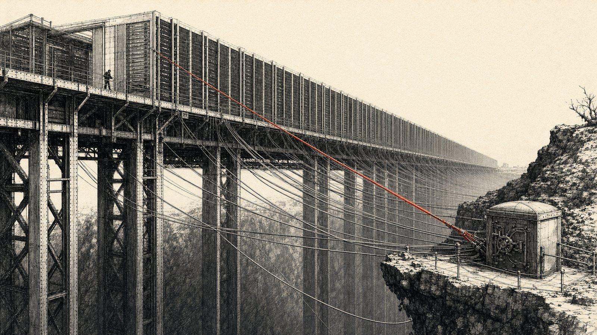
Is CoreWeave Going to Die
No. Coreweave I do not think is going to die. I think Anthropic roadshow will do better than expects due to Fable 5.5 lifting sentiment on Lab…